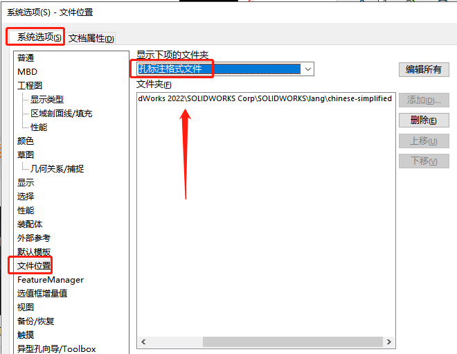

找不到calloutformat.txt
找不到 calloutformat.txt 标注将由几何体定义。这个文件会影响在工程图里“孔标注“的显示情况。

方法
找到 calloutformat.txt 文件，一般在：SW 程序位置-lang-chinese-simplified 文件夹内。
1 | C:\Program Files\SOLIDWORKS Corp\SOLIDWORKS\lang\chinese-simplified |
在【系统选项-文件位置-孔标注格式文件】添加 calloutformat 所在文件夹路径。
